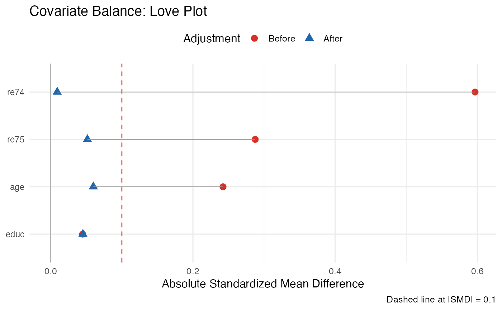

love_plot.RdCreates a publication-ready Love plot (standardized mean differences plot) comparing covariate balance before and after matching, weighting, or any other balancing procedure. Supports multiple adjustment stages.
love_plot(
data_pre,
data_post = NULL,
treatment = NULL,
weights_post = NULL,
covariates = NULL,
threshold = 0.1,
abs_smd = TRUE,
sort_by = c("pre", "post", "name"),
title = "Covariate Balance: Love Plot",
label_size = 3
)Data frame or named numeric vector. Pre-adjustment covariate data (wide format) or pre-computed SMDs (named vector with covariate names as names).
Data frame or named numeric vector. Post-adjustment data
or SMDs. If NULL (default), only pre-adjustment shown.
Character. Treatment variable name (only required when
data_pre is a data frame).
Numeric vector. Analytical weights for post-adjustment
(if data_post is a data frame).
Character vector. Covariates to include. If NULL,
all numeric covariates are used.
Numeric. The conventional balance threshold line (dashed).
Default 0.1.
Logical. If TRUE (default), plot absolute SMD.
Character. How to sort covariates: "pre" (default,
by pre-SMD), "post", or "name".
Character. Plot title.
Numeric. Font size for covariate labels. Default 3.
A ggplot2 Love plot.
Love, T. E. (2002). Displaying covariate balance after adjustment for selection bias: An application in healthcare. Annual Conference of the American Statistical Association.
Austin, P. C. (2009). Balance diagnostics for comparing the distribution of baseline covariates between treatment groups in a propensity-score matched sample. Statistics in Medicine, 28(25), 3083–3107.
data(lalonde, package = "MatchIt")
m <- MatchIt::matchit(treat ~ age + educ + re74 + re75,
data = lalonde, method = "nearest")
love_plot(
data_pre = lalonde,
data_post = MatchIt::match.data(m),
treatment = "treat",
covariates = c("age", "educ", "re74", "re75"),
weights_post = MatchIt::match.data(m)$weights
)
